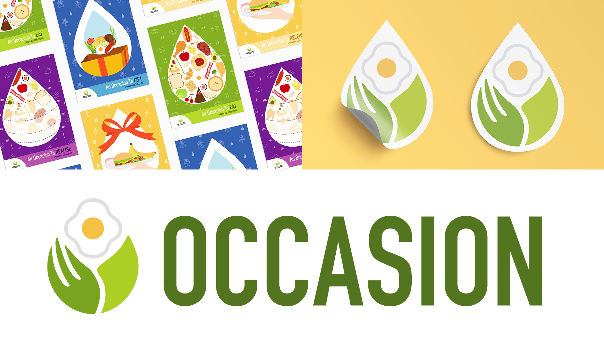

biography
Hihi! My name is Megan and I will be graduating soon with a Bachelor of Design, majoring in Communication Design and Marketing. Despite being pushed to become a doctor or lawyer, I insisted on pursuing the design field and here I am now.
Initially, my dream was to become a fashion designer and this has been with me ever since childhood. In fact, I still carry that dream with me. However, I started gaining interest in graphic design after seeing the attractive work created by some of my graphic designer friends and it made me think that maybe I should take this field into consideration. My determination became stronger after realising that everything in this world eventually involves design. Hence, I started my graphic design journey at The University of Waikato while studying marketing alongside. At the start, I was intimidated by everything and everyone because I felt that I didn’t have the aptitude for drawing. But as time passed, I found myself becoming more confident to share my work as I learned that design is not only limited to drawing. This showed how much I have improved as a designer as I am proud to own my work. In the past 3 years, I have picked up many essential skills such as coding, motion graphics, UX design, etc that I had never expected myself to learn as a graphic designer because my original concept of graphic design was limited to branding and print. I’m happy that I was given the opportunity to learn such a broad range of skills and software because this broadens my future job employment scope. Thanks to my lecturers, tutors, and peers, studying here at Waikato helped me develop a sharper pair of eyes and I now have a keener sense of what makes a design more effective. Throughout my design journey, I found myself enjoying projects related to branding, motion graphics, and UX design.
project description
Many people tend to overestimate themselves by over-ordering and leaving leftovers in restaurants. This
contributes to more than 24,000 tonnes of food waste being generated annually by New Zealand restaurants
and cafes. From that amount, 61% of the food waste is avoidable as it includes edible food. It may not
be visible to everyone but in fact many New Zealanders are living with food insecurity. This percentage
has increased to 20% especially with the outbreak of the current pandemic. The reason that many people
are unable to feed themselves is due to being financially affected.
In this case, I saw a link between both problems and came forward with a food rescue organisation called
‘Occasion’. The organisation intends to work with New Zealand restaurants and cafes to reduce food waste
and food insecurity by feeding the poor so edible food does not end up as waste. Occasion is different
from other similar existing organisations because while we involve restaurants and cafes, we also give
customers the opportunity to participate in the movement, making it more meaningful for everyone.
To educate people about Occasion, I have created a set of advertising posters, an infographic poster and
postcards, a table flip booklet, and an order form. Stickers and gift tags were also created to enhance
and support the branding of Occasion.
Occasion

For more information contact us
Email: degreeshow@waikato.ac.nz
Faculty phone: 0800 924 528
Faculty information: cs.waikato.ac.nz